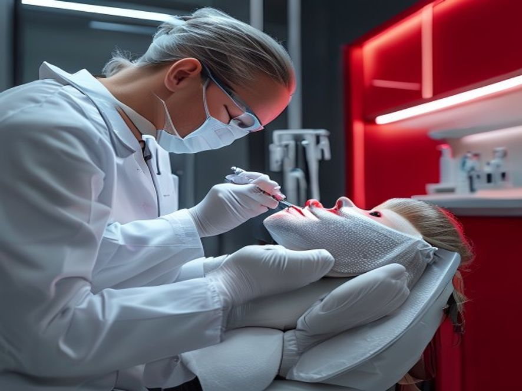

Wahre Ästhetik ist unsichtbar in ihrer Machart und sichtbar in ihrer Wirkung. Bei AGECODE verstehen wir das Äußere als Fortsetzung Ihrer inneren Gesundheit — natürlich, dezent und ohne Kompromiss bei der Diskretion.
Unsere Behandlungen zielen nicht auf Veränderung, sondern auf Erhalt und Regeneration. Ergebnisse, die niemand einer Behandlung zuschreibt — sondern Ihrem guten Zustand.
Ausschließlich nicht-invasiv, ärztlich durchgeführt und harmonisch abgestimmt auf Ihr Longevity-Programm.

Tiefenwirksame Feuchtigkeit und Mikronährstoffe für Spannkraft und ein frisches Hautbild.
Kollagen-Stimulation für Textur, Poren und Elastizität — mit oder ohne Radiofrequenz.
Individuell abgestimmte Peelings für Strahlkraft, gleichmäßigen Teint und Zellerneuerung.
Fokussierter Ultraschall für sanfte Straffung von Kontur und Gewebe — ohne Ausfallzeit.
Dezente, ärztlich durchgeführte Behandlung mimischer Falten — natürlich statt maskenhaft.
Datenbasierte Analyse Ihres Hautzustands als Grundlage jeder Empfehlung.
Vereinbaren Sie ein diskretes Beratungsgespräch bei AGECODE.
Termin anfragen →